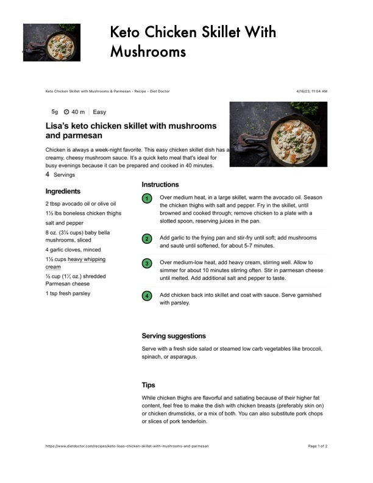

Keto Chicken Skillet With

Original cookbook page 457
Ingredients
- @ Over medium heat, in a large skillet, warm the
- 2 tbsp avocado oil or olive oil the chicken thighs with salt and pepper. Fry in
- 1% Ibs boneless chicken thighs browned and cooked through; remove chicken
- 8 oz. (3% cups) baby bella . . .
- mushrooms, sliced @ Add garlic to the frying pan and stir-fry until so
- . . and sauté until softened, for about 5-7 minutes
- 4 garlic cloves, minced
- 1% cups heavy whipping
- Over medium-low heat, add heavy cream, stirr
- % cup (1% oz.) shredded until melted. Add additional salt and pepper to
- Parmesan cheese
- 1 tsp fresh parsley @ Add chicken back into skillet and coat with sat
- with parsley.
- spinach, or asparagus.
- Tips
- While chicken thighs are flavorful and satiating becau:
- content, feel free to make the dish with chicken breast
- or chicken drumsticks, or a mix of both. You can also ;
- or slices of pork tenderloin.
Instructions
- cream simmer for about 10 minutes stirring often. Stir Serve with a fresh side salad or steamed low carb vec
Recipe #457 from collection